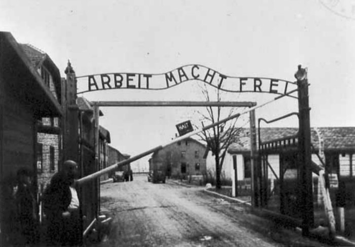

I don’t know if someone will ever read this, but if you are reading this, let me introduce myself. My name is Rebecca and I am a Holocaust survivor. I’ve had many traumatic experiences and I am still currently recovering, mentally, and physically. This is my journal during the Holocaust.
It was so long ago that I don’t remember when it started. All I know is that we’ve been on the run ever since, ever since I was born. Growing up without my parents had changed my life. When I was four, I heard from my uncle that they died in the Buchenwald concentration camp. I never met them. All I could look back to was my old family photos, of my mother and father. Being a child on the run, I couldn’t experience childhood like other children my age. I learned to grow up quickly. It was almost like a 6th sense. I knew well enough to keep quiet all day, and to never whine about being hungry. I’d accepted that this was my life now.
I remember when I was six, my Uncle was taken by the Nazis. It was May 3rd 1939. I heard about how traumatic it was when my parents were taken, but I’d never witnessed it in front of my eyes. Three men crashed into the basement of Heinrich’s drug store, lifting the trap door that concealed us from the Nazis. They each had guns, and when I started to scream, Abigail, my sister, covered my mouth and we slowly backed away into the shadows. We knew the routine, each us would take a brother, even though there are actually cousins and escape a different way and meet in the 2nd street alley. I picked up Aaron, and my sister took Isaac and we went our separate ways.
As I climbed up the ladder to go outside, I looked behind me. One of the soldiers saw me. I quickly ran as fast as I could and I reached the dark alley right when my sister did. The boys were crying, they were my Uncle’s kids and one was 18 months, while one was 3. We waited for my Uncle to arrive. We waited for what felt like hours, but he never came. We came to the undeniable truth that the Nazis must have taken him. There was never time to go back for him, if someone was taken, we had to pray that we will see them again.
Without my Uncle, we were giving up hope, well I was anyways. My sister always stayed strong, but I could see the weariness growing in her eyes, day by day. Our parents being taken away had took a toll on her as well, and I could see her trying to keep me and the boys safe. As much as we both wanted each other near us, we both knew that when the Nazis came, there was no time for saving your friends. If Abigail was ever taken, I knew that there was no going back for her, it would become my duty to keep the rest of the family safe.
